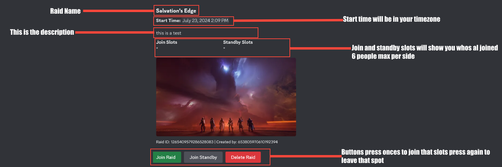
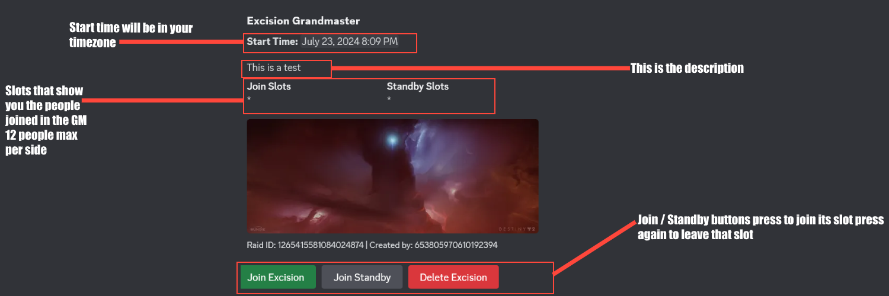

About the Bot
Welcome to the wiki for our Discord bot! This bot is designed specifically for Destiny 2 players within our Discord server. To make use of the bot, you must be a member of the server and an active player of Destiny 2. The bot offers a variety of commands to assist with organizing raids, managing notifications, and more.
If you're not already a member, you can join our Discord server by clicking the link below:
Join Our Discord Server I am not the owner of this destiny server but I am a moderator.
Raid Command Help
Creating a Raid
Use the command `!!raid
Example: `!!raid vog
You can leave some fields empty for default values.
Aliases: crota, ron, vog, kf, lw, gos, vow, dsc, se
Getting the Start Time in the Correct Format:
- Go to Discord Timestamps.
- Select the 'Long Date with Short Time' format.
- Copy the resulting timestamp and paste it as the startTime parameter.
Joining a Raid
Click the 'Join Raid' button on the raid post to join the raid.
Standby for a Raid
Click the 'Join Standby' button on the raid post to be added to the standby list.
Error Handling
The command will inform you if there are issues with the raid name or start time, and provide instructions to correct them.
Excision Command Menu
Excision Grandmaster Command Overview
The `!!exe` command is used to schedule and manage Excision Grandmaster (GM) raids. This command allows you to create a new Excision GM event with a specified start time and description.
Example: `!!exe
Start Time Format:
- Ensure the start time is formatted as
- To get the correct Unix timestamp format, visit Discord Timestamps.
- Select 'Long Date with Short Time' as the type.
- Copy the resulting timestamp and paste it as the startTime parameter.
Error Handling:
Ensure the start time is in the correct format: `
The command will provide error messages if the format is incorrect or if any issues occur during execution.
Message Components:
The Excision GM post will include buttons to join the raid, join standby, or delete the raid. The post will also display the start time, description, and the number of slots available for joining and standby.
Ping Command Menu
Ping Commands Overview
!!join-ping
Notifies users who have joined a raid. Use this command in reply to the raid post.
Example: `!!join-ping Ready for the raid!`
!!standby-ping
Notifies users who are on standby for a raid. Use this command in reply to the raid post.
Example: `!!standby-ping There’s a spot available!`
Steps to Use:
- Reply to the specific raid post message where you want to notify users.
- Use the command `!!join-ping` or `!!standby-ping` and include a message if desired.
The command will delete the original command message and send a notification with the specified message (if any) to the users mentioned in the "Join Slots" or "Standby Slots" field of the raid post.
Modifications Command Menu
Modifications Commands Overview
!!change-time
Updates the start time of an existing raid post. This command is useful for adjusting the schedule of a raid event.
Example: `!!change-time
Steps to Use:
- Reply to the specific raid post message you want to modify.
- Provide the new start time using the format `
Ensure that you are the creator of the raid post and that it contains an embed.
Raid Aliases
- crota - Crota's End
- ron - Root of Nightmares
- vog - Vault of Glass
- kf - Kings Fall
- lw - Last Wish
- gos - Garden of Salvation
- vow - Vow of the Disciple
- dsc - Deep Stone Crypt
- se - Salvation's Edge
Credits
Special thanks to all the members of our discord who helped test and bring this bot to life!